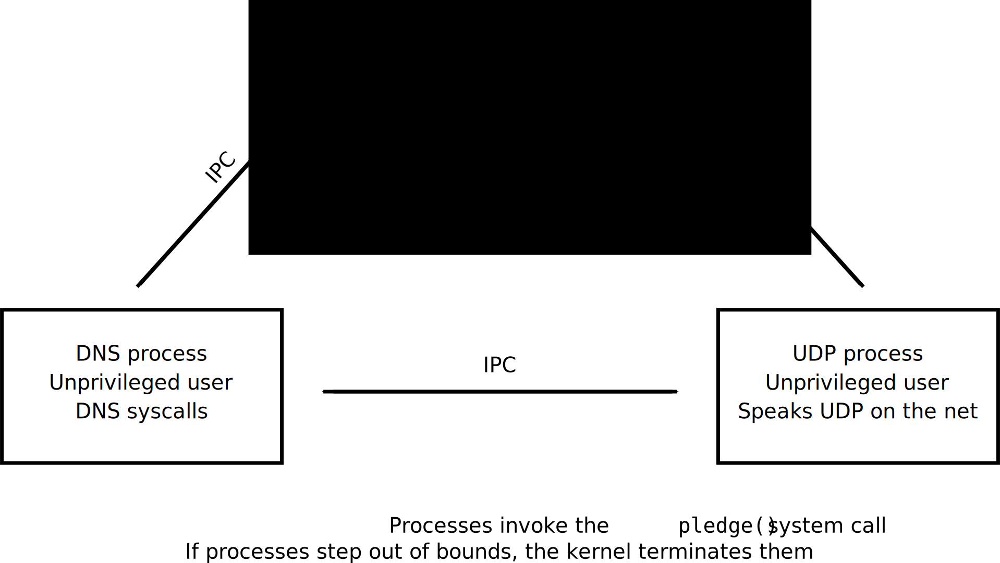

Introduction to security design
AJ
he/him
Winter 2 batch
Security/privacy
What we're covering
tl;dr: system-level stuff
- How common security vulnerabilities work
- Mitigating them
- Reducing their impact
What we're not covering
- Application-level vulnerabilites
- Secure distribution
- Operational security
- Cryptography
- Responsible disclosure
Secure programming
Secure programs are subsets of correct programs
No program is 100% correct
Hence: security bugs
Memory safety bugs
Use-after-frees
Dangling pointers
Buffer overflows
Moar bugs!
Race conditions
Resource leaks
Example: buffer overflows
When a program writes past the end of a buffer
The write overflows out of the allocated memory region
Stack-based exploitation (aka stack smashing)
Based on overwriting something
Security-critical information: e.g. a variable in a stack frame
Execution-related pointers: e.g. function pointers, stack frame return addresses, exception handlers
Easiest solution: memory-safe languages
Python, Ruby, JavaScript, etc. - already memory-safe
C and C++ -> Rust
Otherwise: tools
Valgrind
Your compiler (-fstack-protector[-all])
OS tools (e.g. memory junking, ASLR)
Don't make your tools useless (Heartbleed)
Also helpful: reducing attack surface
Attack surface = how much of your program is exposed to attack
If your program doesn't ever encounter an attacker, that's zero attack surface
Example: Tor Browser's security slider
Other bugs besides memory safety
Assume your program will be compromised
Preventative measures
Principle of least privilege
Makes sense if you assume security bugs
Obvious example: don't run things as root
Dropping privileges
Start as root
Do some stuff (e.g. bind to a restricted port)
Set the user the program's running under to an unprivileged user
nobody
Dividing your program up
Multiple processes
Multiple security domains
Each restricted as much as possible
Example: ntpd
Sets the time of day (requires root)
Speaks UDP to time servers
Queries the DNS
OpenBSD ntpd
Good example: Chrome
Validation
Make sure requests make sense
Confused deputy attack
chroot jails
Chroot() causes dirname to become the root directory, that is, the starting point for path searches of pathnames beginning with `/'.
- chroot(2)
Restrict which parts of the filesystem can be used
chroot example - setup
$ pwd
/tmp
$ ls /home
alex
$ mkdir chroot-jail/{,bin,lib,lib64}
$ for i in bin lib lib64; do
> sudo mount --bind /$i chroot-jail/$i
> done
[sudo] password for alex:
chroot example - setup
$ tree chroot-jail
chroot-jail
├── bin
│ ├── bash
[...]
│ └── zsh5
└── lib
├── cpp -> /etc/alternatives/cpp
[...]
│ └── libxt_udp.so
└── lib64
└── ld-linux-x86-64.so.2 -> /lib/[...]
2311 directories, 10645 files
chroot example - jailing
$ sudo chroot chroot-jail
# pwd
/
# ls /home
ls: cannot access /home: No such file or directory
# ls /
bin lib lib64
# exit
$ pwd
/tmp